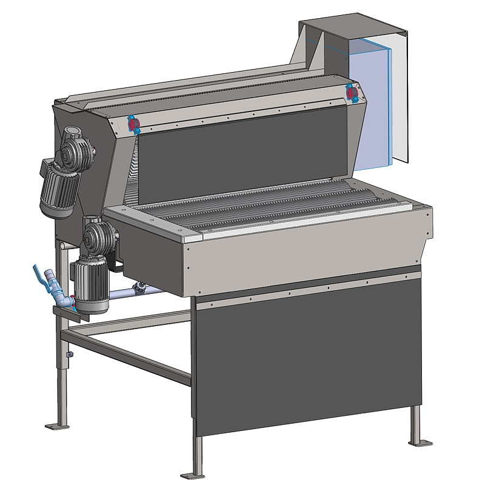
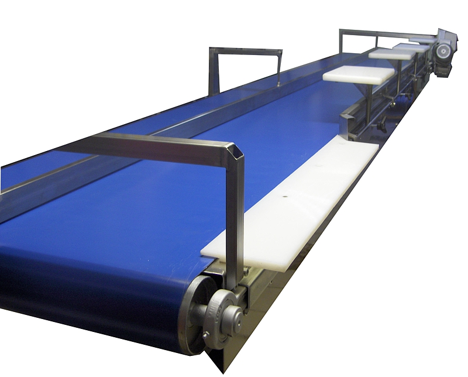
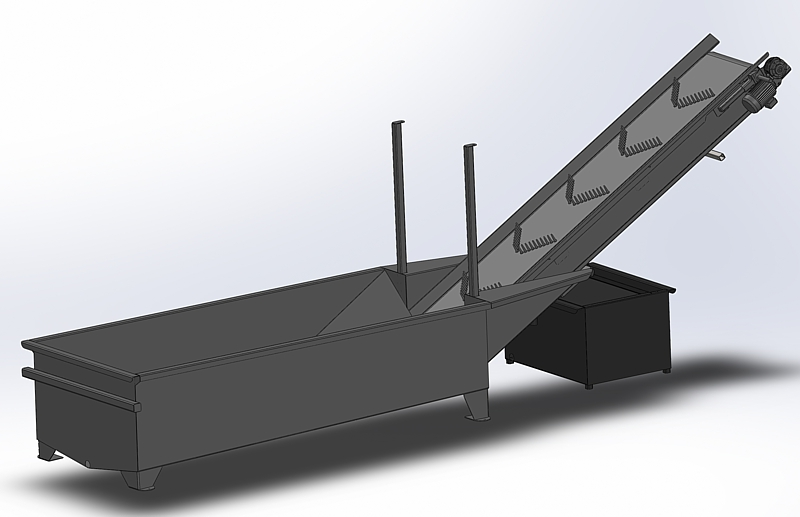

Unsere Kürbis-Maschinen.
Klicken Sie auf einen Eintrag, um Details zu sehen. Jeden Prozessschritt fertigen wir selbst — einzeln oder als komplette Linie.
Kürbisbürstmaschine
Schonende Reinigung von Kürbissen ohne Beschädigung der Schale. Rotierende Bürstenwalzen entfernen anhaftende Erde, Staub und lockere Stiele. Konstruktion auf langjährige Saisonarbeit ausgelegt.

Kürbisverleseband
Verleseband mit ergonomischen Arbeitsplätzen für die manuelle Sortierung nach Größe, Form und Qualität. Beleuchtet, höhenverstellbar, mit Ausschleuse-Kanälen für jede Hand.

Kürbiswanne
Aufgabewanne mit schonender Einspeisung — verhindert Stoßstellen und Druckstellen, die später zu Lagerschäden führen würden.

Sonderausführungen
Spezielle Hallenmaße, ungewöhnliche Sorten, Anbindung an bestehende Abpackung — sagen Sie uns, was Sie brauchen. Wir konstruieren passgenau in Irslingen.

Weitere Maschinenbezeichnungen auf Anfrage — bei Fragen zu einem konkreten Typ sprechen Sie uns an.